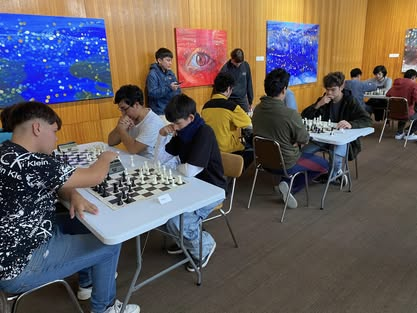

| Curriculum VITAE | Cristian Vásquez Valdés  |
|---|---|
Profesional que aporta al desarrollo empresarial y de equipos de trabajo aportando al buen clima laboral |
|
| Proyecto 2 | Dirigente deportivo de club deportivo de Ajedrez en Molina, el cual tiene como fin difundir la disciplina y la práctica constante.  |